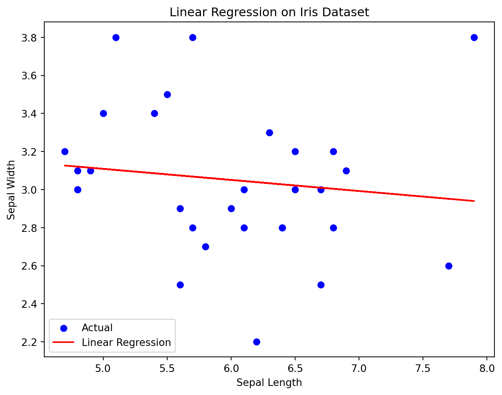

import pandas as pd
from sklearn.datasets import load_iris
from sklearn.model_selection import train_test_split
from sklearn.linear_model import LinearRegression
import matplotlib.pyplot as plt
# Load Iris dataset
iris = load_iris()
# Create a DataFrame from the Iris dataset
iris_df = pd.DataFrame(data=iris.data, columns=iris.feature_names)
iris_df['target'] = iris.targetPredictive Modeling on the Iris Dataset: Linear and Nonlinear Regression
Introduction
Predictive modeling is a crucial aspect of data analysis, allowing us to understand relationships within datasets and make predictions. In this blog post, we’ll explore linear and nonlinear regression techniques using Python on the classic Iris dataset. Specifically, we’ll predict Sepal Width based on Sepal Length, showcasing both linear and nonlinear regression models.
The Iris dataset, containing information about three distinct iris species, has served as a cornerstone for exploring various machine learning algorithms. This blog post delves into the realm of linear regression, aiming to unveil the hidden relationship between sepal length and width within the dataset.
Data Preparation
The code begins by loading the Iris dataset and converting it into a Pandas DataFrame. It then extracts the sepal length and sepal width features as our independent and dependent variables respectively. Finally, it splits the data into training and testing sets to evaluate the performance of the model.
Understanding Linear Regression
Linear regression is a fundamental statistical technique used to model the linear relationship between two variables. It aims to find the best-fit straight line that captures the overall trend in the data.
Model Training and Prediction
The code initializes and trains a Linear Regression model on the training set. This involves fitting the model parameters to minimize the error between predicted and actual sepal widths.
# Select features for regression (Sepal Length and Sepal Width)
X = iris_df[['sepal length (cm)']]
y = iris_df['sepal width (cm)']
# Split the data into training and testing sets
X_train, X_test, y_train, y_test = train_test_split(X, y, test_size=0.2, random_state=42)
# Initialize and train Linear Regression model
linear_reg = LinearRegression()
linear_reg.fit(X_train, y_train)
# Predict on the test set
y_pred_linear = linear_reg.predict(X_test)Visualization and Interpretation
A scatter plot is generated to visualize the relationship between sepal length and width, along with the predicted regression line. This allows us to visually assess the model’s fit and identify any potential outliers or deviations from the predicted trend.
# Plotting the regression line
plt.figure(figsize=(8, 6))
plt.scatter(X_test, y_test, color='blue', label='Actual')
plt.plot(X_test, y_pred_linear, color='red', label='Linear Regression')
plt.xlabel('Sepal Length')
plt.ylabel('Sepal Width')
plt.title('Linear Regression on Iris Dataset')
plt.legend()
plt.show()
Insights and Implications
By analyzing the regression line, we can observe the slope and intercept coefficients. These coefficients quantify the average change in sepal width for a given unit change in sepal length and the predicted sepal width when the sepal length is zero, respectively.
Understanding the relationship between sepal length and width can be beneficial for various applications, such as:
Species identification: Combining this knowledge with other features can potentially aid in identifying different iris species based on their sepal dimensions. Morphological analysis: Investigating the relationship between different features can provide insights into the overall morphology of the iris flowers. Predicting sepal width: With sufficient data and accurate models, we can predict the sepal width of an iris flower based on its sepal length.
Beyond Linear Regression
While linear regression effectively captures linear relationships, it may not be suitable for complex, non-linear relationships. In such cases, exploring other regression techniques like polynomial regression or non-linear models like neural networks might be necessary to accurately model the data.
By exploring the power of linear regression in the context of the Iris dataset, we gain valuable insights into the relationship between sepal length and width. This knowledge can be further used for various analysis tasks and pave the way for exploring more complex data relationships.
Non-linearity in Practice
The ability of polynomial regression to capture non-linear relationships makes it a valuable tool for various applications, including:
Modeling complex data: In situations where linear regression falls short, polynomial regression can provide a more accurate representation of the underlying data patterns.
Improving prediction accuracy: For tasks like predicting sepal width based on sepal length, utilizing non-linear models can lead to more precise and reliable predictions.
Gaining deeper insights: By analyzing the trained model and its coefficients, we can acquire a better understanding of the relationship between different features and their contributions to the outcome variable.
By leveraging the power of polynomial regression, we can unveil the hidden curves within data and extract valuable insights that would otherwise remain concealed.
Summary of Insights from Above Analysis’
Linear Regression
Linear regression models the relationship between Sepal Length and Sepal Width assuming a linear trend. The visualization of the regression line offers insights into how Sepal Width varies concerning Sepal Length.
Nonlinear Regression
Polynomial regression allows for capturing nonlinear relationships. By introducing polynomial features, the quadratic model provides a more flexible representation, potentially capturing more intricate patterns in the data.
Conclusion
Through the exploration of linear and nonlinear regression on the Iris dataset, we’ve demonstrated how these modeling techniques offer varying perspectives on the relationship between Sepal Length and Sepal Width. This analysis provides a foundational understanding of predictive modeling and serves as a starting point for further exploration into more advanced regression techniques.